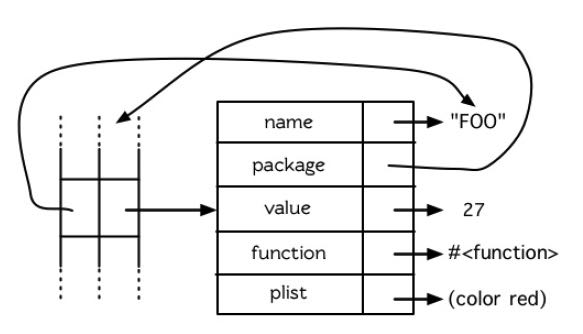

ANSI Common Lisp
Table of Contents
1. C1-C4(简介，欢迎来到Lisp，列表，特殊数据结构)
符号(symbol)比如abc默认地会被求值。如果不希望求值的话，那么加上’或者是(quote)=> ‘abc or (quote abc)。 两个特殊的符号包括t 和 nil, 对自身求值。
(defun add-xy (x y) (+ x y)) 这里add-xy是符号。但是如果直接使用add-xy, 它是没有办法求值的，因为它是一个函数。 为了得到这个函数对象，可以使用(function add-xy)，或者是#’add-xy. 拿到这个函数对象后，可以使用apply/funcall (apply #’add-xy ‘(1 2)) 或者是 (funcall #’add-xy 1 2)
数组可以通过(make-array)或者是(vector)来创建，(aref)/(svref)来引用数组元素。数组字面量构造也很简单#na(…) 表示 构造n维的数组，比如#2a((10 20 30) (40 50 60))那么这个就是一个2x3的矩阵。
字符使用#\c表示，(char-code)/(code-char)在字符和对应的值之间转换。对应的比较函数诸如 #’char<, #’char\=（不同）等 (typep (char-code #\a) ‘integer) => T. 引用字符串中字符使用(char s idx).
序列(sequences)类型包括列表，向量，数组，字符串。在上面有很多通用操作比如subseq, copy-seq, length, sort. elt 是一个比较特殊的位置定位函数，它很通用但是也意味着效率没有svref, char这类专用函数高。
结构体(struct) 可以通过(defstruct)来创建。假设我们创建point的话，那么还会附带make-point, point-<attr>, copy-point, point-p(检查类型) 这些函数。结构体的类型层次是 point -> structure -> atom -> t. 此外还可以对这些struct进行定制化比如如何打印，以及如何初始化字段等
(defun print-point (obj stream depth)
(format stream "#Point<~A, ~A>" (point-x obj) (point-y obj)))
(defstruct (point
(:print-function print-point))
(x nil)
(y nil))
哈希表(hashtable)可以通过(make-hash-table :size), gethash用来查找,remhash用来移除,(maphash #’(lambda (k, v) ..) ht)则可以用来遍历。
2. C5（控制流）
return有这个几个形式
- (block name … (return-from name value))
- (defun name … (return-from name value))
- 如果只是return的话，相当于(return-from nil), 所以需要配合(block nil …)
- 许多do操作符都有一个隐式的(block nil) 可以直接从do所在block里面出来
let/let*以及destructing-bind(模式匹配), case, cond
(defun month-length (month)
(case month
((1 3 5 7 8 10 12) 31)
((4 6 9 11) 30)
(2 28)
(t "unknown")))
(month-length 1)
do/do*/dolist/dotimes
(defun fac (n)
(do ((i 1 (+ i 1))
(res 1 (* res i)))
((> i n) res)))
(defun fac (n)
(let ((res 1))
(dotimes (i n res) ;; 第三个参数可以作为dotimes返回
(setf res (* res (+ i 1))))))
感觉引入multiple-value这个东西没有什么必要，完全可以使用list带代替。为此还引入了许多函数，比如(values), (multiple-value-bind), (multiple-value-call). 为了回归到list这个简单概念，还有(multple-value-list)
异常控制流上有catch, throw 和 unwind-protect(在catch之后不会中断控制流继续执行)。(error)函数就直接产生错误
(defun sub ()
(print "sub start")
(throw 'something-wrong 'return-value)
(print "sub end"))
(defparameter *x* 10)
(defun run ()
(catch 'something-wrong
(unwind-protect
(sub)
(setf *x* 20))))
(format t "return value of run = ~A ~%"(run))
(print *x*)
3. C6(函数)
每个函数通常会关联一个符号，比如 `(defun add1)` 这样。为了获取某个符号对应的函数，有两种方式
(eql #'+ (symbol-function '+)) ;; 前面加上#，或者是调用symbol-function (fboundp '+) ;; 判断符号是否关联函数 (setf (symbol-function 'add1) #'(lambda (x) (+ x 1))) ;; symbol-function返回值是settable的
如果函数返回值是settable的话，我们可以做额外的实现：（但是如果不重新实现，通常也会有正确的定义）
(defun head (lst) (car lst)) (defun (setf head) (val lst) (setf (car lst) val)) ;; (setf (head a) 10) ===> lst = a, val = 10
labels 局部函数定义比如 (label f (lambda (x) … (f 10)) 然后可以在函数表达式里面引用这个f
函数可选/剩余/关键字参数. 优先级别是可选, 关键字, 剩余。这些参数还可以使用在destructing-bind里面。这个参数解构非常漂亮
(defun myfn (p0 p1 &rest args)
(format t "p0 = ~A, p1 = ~A~%" p0 p1)
(format t "args = ~A~%" args))
(myfn 20 30 ;; required
40 50 ;; args
)
(defun myfn2 (p0 p1 &optional (o1 10) (o2 20) &key (k1 30) (k2 40))
(format t "p0 = ~A, p1 = ~A~%" p0 p1)
(format t "o1 = ~A, o2 = ~A~%" o1 o2)
(format t "k1 = ~A, k2 = ~A~%" k1 k2))
(myfn2 20 30 10 20 :k1 60)
(destructuring-bind ((&key w x) &rest y) '((:w 3) a)
(list w x y))
2.11 小节解释过局部与全局变量的差别。实际的差别是词法作用域（lexical scope）的词法变量（lexicalvariable），与动态作用域（dynamic scope）的特别变量（special variable）的区别。但这俩几乎是没有区别，因为局部变量几乎总是是词法变量，而全局变量总是是特别变量。
lisp允许我们在函数里面指定使用全局变量。但是和C++/Java不同的是，我们可以针对某个执行体修改全局变量，也就是全局变量的修改仅仅是在这个执行体里面可以见，这种效果很明显就是动态作用域
(defparameter x 'global-binding)
(let ((x 'first-binding))
(defun foo ()
(declare (special x))
x))
(let ((x 'second-binding))
(foo))
compile/compiled-function-p 编译函数/文件和判断函数是否被编译
(defun sum (n m)
(let ((acc 0))
(dotimes (i n)
(dotimes (j m)
(setf acc (+ acc i j))))
acc))
(time (sum 10000 20000))
(print (compiled-function-p #'sum))
4. C7-C8（符号和IO）
read/read-from-string 都会对输入字符进行分析。如果某个字符比较特殊的话，那么read会调用某个特殊过程对接下来的内容做处理。这类比较特殊的字符称为宏字符(macro character), 遇到宏字符的时候会出发读取宏(read-macro).
所有预定义的派发读取宏使用井号 ( # )作为派发字符(dispatching char)。我们已经见过好几个。举例来说， #' 是 (function …) 的缩写，同样的 ' 是 (quote …) 的缩写。
其它我们见过的派发读取宏包括 #(…) ，产生一个向量； #nA(…) 产生数组； #\ 产生一个字符； #S(n …) 产生一个结构。 当这些类型的每个对象被 prin1 显示时 (或是 format 搭配 ~S)，它们使用对应的读取宏 [2] 。这表示着你可以写出或读回这样的对象:
(let ((*print-array* t))
(let ((s (format nil "~S" (vector 1 2))))
(format t "~A~%" s)
(vectorp (read-from-string s))))
#(1 2)
当然我们拿回来的不是同一个向量，而是具有同样元素的新向量。
不是所有对象被显示时都有着清楚 (distinct)、可读的形式。举例来说，函数与哈希表，倾向于这样 #<…>被显示。实际上 #<…> 也是一个读取宏，但是特别用来产生当遇到 read 的错误。函数与哈希表不能被写出与读回来，而这个读取宏确保使用者不会有这样的幻觉。
符号本质上是一个对象，上面有很多属性包括name(可以通过(symbol-name)获得), package, value/function是分开绑定的，以及plist(property list). 符号对应的name可以非常灵活，如果希望里面有空格的话还可以使用'|This is sym name| （估计不太会使用）。

符号可以通过package进行管理。符号被扣押(intern)的意思就是符号被当前某个名字空间下面。然后我们也可以定义package和引用其他packages
(defpackage "MY-APPLICATION" (:use "COMMON-LISP" "MY-UTILITIES") (:nicknames "APP") (:export "WIN" "LOSE" "DRAW")) (in-package my-application)
lisp下面所有的关键字被单独放在一个 `keyword` 的包里面。相比符号，它的好处是可以直接比较。因为两个相同字符串的符号有可能因为所属package不同而不同。关键字可以很容易地被定义出来
(format t "This is keyword ~A~%" :hello)
Lisp 有一件可能会使你困惑的事情是，符号与变量的从两个非常不同的层面互相关联。当符号是特别变量（special variable）的名字时，变量的值存在符号的 value 栏位。symbol-value 函数引用到那个栏位，所以在符号与特殊变量的值之间，有直接的连接关系。而对于词法变量（lexical variables）来说，事情就完全不一样了。一个作为词法变量的符号只不过是个占位符（placeholder）。编译器会将其转为一个寄存器（register）或内存位置的引用位址。在最后编译出来的代码中，我们无法追踪这个符号 (除非它被保存在调试器「debugger」的某个地方)。因此符号与词法变量的值之间是没有连接的；只要一有值，符号就消失了。
5. C10(Macro)
调用 eval 是跨越代码与列表界线的一种方法。但它不是一个好方法:
- 它的效率低下： eval 处理的是原始列表 (raw list)，或者当下编译它，或者用直译器求值。两种方法都比执行编译过的代码来得慢许多。
- 表达式在没有词法语境 (lexical context)的情况下被求值。举例来说，如果你在一个 let 里调用 eval ，传给 eval 的表达式将无法引用由 let 所设置的变量。
(setf code '(lambda (x) (+ x 10)))
(let ((x (coerce code 'function)))
(let ((y (compile nil code)))
(apply x '(10))
(apply y '(20))))
由于 coerce 与 compile 可接受列表作为参数，一个程序可以在动态执行时 (on the fly)构造新函数。但与调用 eval 比起来，这不是一个从根本解决的办法，并且需抱有同样的疑虑来检视这两个函数。函数 eval , coerce 与 compile 的麻烦不是它们跨越了代码与列表之间的界线，而是它们在执行期做这件事。跨越界线的代价昂贵。大多数情况下，在编译期做这件事是没问题的，当你的程序执行时，几乎不用成本。
defmacro / macroexpand-1 定义宏和展开宏。在宏里面通常使用backquote `. 在正常情况下面，backquote和quote是完全一样的。但是macro里面，可以使用,(comma)和,@(command-at)来重启求值：其中,解释为value, 而,@是将list参数展开变成一层。为了不让符号引起冲突，lisp提供一个特殊函数(gensym)来生成唯一符号，确保不会和其他符号冲突。
(defmacro myif (exp a &optional b)
(let ((it (gensym)))
`(let ((,it ,exp))
(cond (,it ,a)
(t ,b)))))
(pprint
(macroexpand-1
'(myif (> 10 20)
(print "10 > 20")
(print "10 <= 20"))))
;;;;;;;; output ;;;;;;;;
(LET ((#:G418 (> 10 20)))
(COND (#:G418 (PRINT "10 > 20")) (T (PRINT "10 <= 20"))))
6. C11(CLOS)
defclass可以用来创建类，可以指定从哪些类进行继承，以及有哪些字段。相比C++/Java但是这样创建出来的类是没有方法的，但是CLOS提供了比方法更强大的通用函数(Generic Functions)来实现方法。
(defclass obj () ()) (defclass rect (obj) ((height :initform 20 :initarg :height :accessor rect-height) (width :initform 20 :initarg :width :accessor rect-width))) (let ((a (make-instance 'rect :height 30 :width 30))) (print (rect-height a)) (print (rect-width a)))
defclass里面还有一个关键字很有意思是 :allocation :class/:instance(默认)。如果是:class的话那么这个变量是类级别共享的。
如果某个类集成多个类的话，那么如何定义这些类的优先级别关系呢？简单来说就是尽可能地从左边开始查找。比如cast-statue最左边是statue, 然后试试sclpture, 直到根节点然后回退。所以优先级别是cast-statue ,statue , sculpture , casting , metalwork , standard-object , t。优先级的主要目的是，当一个通用函数 (generic function)被调用时，决定要用哪个方法。
(defclass sculpture () (height width depth)) (defclass statue (sclpture) (subject)) (defclass metalwork () (metal-type)) (defclass casting (metalwork) ()) (defclass cast-statue (statue casting) ())
通用函数(generic functions)简单地说就是依赖参数类型或者是参数表达式进行匹配。如果按照参数类型匹配的话，那么很明显需要知道每个类型的优先级别如何，然后尽可能匹配specialized(特化)的实现。
(defmethod combine ((ic ice-cream) x)
(format nil "~A ice-cream with ~A."
(name ic)
x))
(defmethod combine ((x number) (y number))
(+ x y))
(defmethod combine ((x (eql 'powder)) (y (eql 'spark)))
'boom)
方法可以像一般 Common Lisp 函数一样有复杂的参数列表，但所有组成通用函数方法的参数列表必须是一致的(congruent)。参数的数量必须一致，同样数量的选择性参数（如果有的话），要嘛一起使用 &rest 或是&key 参数，或者一起不要用。下面的参数列表对是全部一致的。
- (x) (a)
- (x &optional y) (a &optional b)
- (x y &rest z) (a b &key c)
- (x y &key z) (a b &key c d)
而下列的参数列表对不是一致的：
- (x) (a b)
- (x &optional y) (a &optional b c)
- (x &optional y) (a &rest b)
- (x &key x y) (a)
只有必要参数可以被特化。所以每个方法都可以通过名字及必要参数的特化独一无二地识别出来。如果我们定义另一个方法，有着同样的修饰符及特化，它会覆写掉原先的。
在通用方法上还引入了辅助方法(auxiliary methods), 可以在(defmethod foo :before/:after)在foo方法上增加before和after调用来进行trace. 更有甚者还可以加入:around装饰这个方法)
在消息传递模型里，我们仅特化 (specialize) 第一个参数。 牵扯到多对象时，没有规则告诉方法该如何处理 ── 而对象回应消息的这个模型使得这更加难处理了。在消息传递模型里，方法是对象所有的，而在通用函数模型里，方法是特别为对象打造的 (specialized)。 如果我们仅特化第一个参数，那么通用函数模型和消息传递模型就是一样的。但在通用函数模型里，我们可以更进一步，要特化几个参数就几个。这也表示了，功能上来说，消息传递模型是通用函数模型的子集。如果你有通用函数模型，你可以仅特化第一个参数来模拟出消息传递模型。
7. C13（速度）
https://stackoverflow.com/questions/14813801/proclaim-declaim-declare 这篇文章看起来declare/declaim都是用来做declaration的，只不过一个是local一个是global的，一个是symbol而另外一个macro.
lisp可以在针对文件或者某个block来调整编译选项：0-3重要程度，speed, compilation-speed, safety, space, debug
(declaim (optimize (speed 3))) ;; 针对文件级别
(defun sum (n m)
(let ((res 0))
;; (declare (optimize (speed 3) (safety 0))) ;; 针对block/form级别
(declare (optimize (speed 0) (debug 3)))
(dotimes (i n)
(dotimes (j m)
(setf res (+ res i j))))
res))
(time (sum 10000 20000))
此外我们还可以在变量上添加类型声明(type declarations)来提高速度。通常来说只有定长整数和定长整数的数组可以有比较大的优化空间，一旦这些类型确定的话可以有效使用cache locality来加速为计算，而且通常效果非常显著。我测试了一下，如果声明类型和实际类型不匹配的话，也不会出现任何错误。
(defun sum (n m)
(let ((res 0))
(declare (optimize (speed 3) (safety 0)))
;; (declare (optimize (speed 0) (debug 3)))
(dotimes (i n)
(dotimes (j m)
(declare (fixnum i j)) ;; 提示编译器这里i,j都是定长整数
(setf res (+ res i j))))
res))
(time (sum 10000 20000))
8. C14（进阶议题）
类型标识符(Type Specifiers): 可以通过类型组合+表达式(比如and, or, cond, if等)来定义某一类类型。我理解是它可以用来做静态分析，在编译期间就可以发现问题。
;; 在SBCL里面没有通过
(deftype multiple-of (n)
`(and integer (satisfies (lambda (x)
(zerop (mod x ,n))))))
(typep 12 '(multiple-of 4))
读取宏(Read-Macros): 使用函数(set-macro-character)为某个宏字符(macro character)来定义读取宏(read-macros). 宏字符的含义是，当读取到这个字符的时候，我们需要使用另外一个函数来解释这个字符。
(set-macro-character #\'
#'(lambda (stream char)
(list (quote quote) (read stream t nil t))))
如果我们不希望增加更多宏字符，只需要在某个宏字符上增加扩展功能的话，那么可以使用(set-dispatch-macro-character)来设置。如果要增加更多宏字符用于派发的话，则需要使用(make-dispatch-macro-character) 函数。